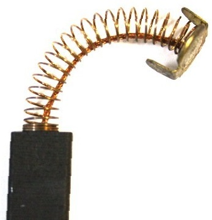

Cерводвигатели (сервомоторы) и другое промышленное оборудование. Щетки. Конструкционные материалы
Характеристики щеток
Использование щеток обеспечивает надёжную работу элементов скользящего контакта электрооборудования. Щетки, в основном, делят на 3 группы:
- - Графитные.
- - Электрографитированные.
- - Металлографитные.
Графитные производят с использованием пекового и нефтяного кокса, сажи, естественного графита. Электрографитированные щётки производятся по типу графитных, при этом дополнительно производится процесс обжига с использованием высоких температур, этот процесс называют электрографитированием. В металлографитных щетках, как следует из названия, металлический, по большей части медный, порошок смешивают с графитом.
Для указанных типов щеток используются связующие, которые добавляются к основным материалам. Задача связующих – придавать пластичность сырьевому мелкозернистому материалу. Это позволяет осуществлять прессовку в виде пластин. В дальнейшем осуществляется прокалка пластин, до самого момента спекания следует обеспечить безвоздушную среду.
На фотографии показана графитовая щетка эг 6х12х24 для электродвигателей
Каждая группа щеток обладает специфическими физическими свойствами. Характеристики различных марок щеток, включая типы и размеры щёток.
Металлографитные щетки широко применяются для контактных колец электродвигателей, переменного тока. А электрографитированные щетки используются для электродвигателей на постоянном токе.